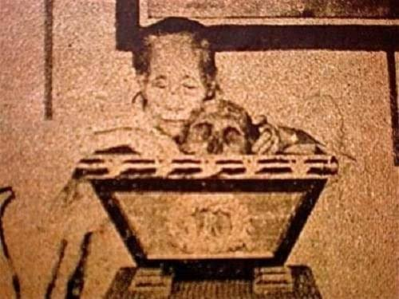
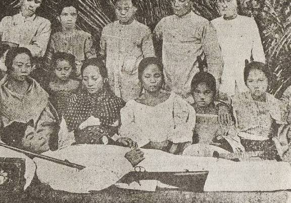
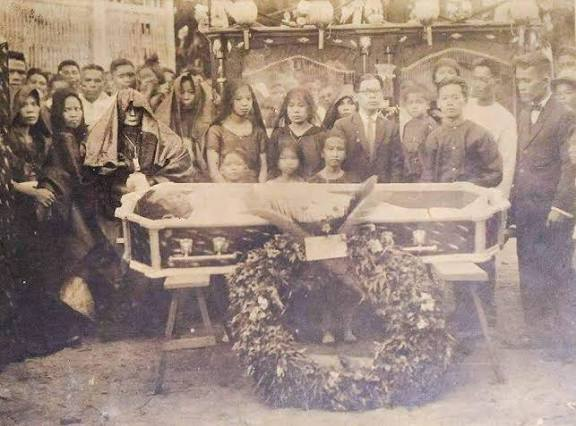
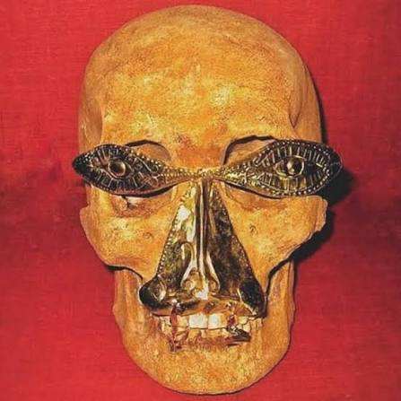

Alam mo ba? Basahin natin.
Ayon kay Ambeth Ocampo, noong nagsisimula palang ang Recuerdo de patay sa Pilipinas sa papamigitan nang pagpinta nito sa malaking lona(canvas) ay hindi ito tanggap ng mga Pilipino lalo na kung ipangdedesenyo ito sa sala. Dahil dito ang mga pintor ay gumawa ng paraan sa pamamagitan ng imahinasyon upang ipinta ng bukas ang mga mata ng patay o kaya naman ay pagmukhain lang itong natutulog, at dito nagsimula ang kasabihan nating "Parang natutulog lang!".
MGA HALIMBAWA;



ALAMIN NATIN!
| Paraan ng Paglilibing |
Kahulugan |
Hanging Coffin of Ifugao
|
Pamamaraan ng mga Ifugao ng paglilibing sa kanilang kaanak. Ipinapakita nito na ang kaluluwa ay malapit na sa langit. Ayon sa paniniwalang Anito ang mga kaluluwa ay maari ring maging anita, dahil dito kapag nilagak ang kanilang labi sa mataas na bahagi ng bundok ay mas madali sila nitong mababantayan.
|
Sementeryo
|
Genesis 3:19 "Ang katawan ng tao ay galing sa lupa at babalik din sa lupa"
Sinisimbolo ng sementeryo ang estado nating bilang tao.
|
| Paraan ng Paglilibing |
Kahulugan |

Oton Death Mask
|
Ang Oton Death Mask ay ginagamit upang hindi makapasok ang mga kaluluwa sa kapaligiran sa bangkay ng namayapa. Ginagamit din ito bilang pamasahe o pabaon ng namayapa sa kaniyang paglalakbay sa kabilang buhay.
|
Pabaon sa Patay
|
Tinatawag na pabaon sa patay ngunit tila nagbago ang kahulugan, ito ay binabawi sa patay at magmimistulang agimat upang swertihin sa Negosyo. Kadalasan ay sinasamahan ito ng putol na rosar-yo upang maging gabay sa pagpunta sa langit at upang hindi na maghanap ng susunod sa kaniya o kasama.
|
SUBUKIN NATIN
Ano kaya ang pinagmulan ng paniniwala sa pagpapagpag o paglilinis pagkatapos dumalo sa isang lamay?
Dahil ang mga katutubong Pilipino ay naniniwala sa paglabas ng kaluluwa sa katawan, minsan ay hindi ito dumederetso sa kabilang buhay. Maari itong sumama sa iyo pag-uwi at manirahan sa iyong tahanan, upang hindi mangyari ito, naniniwala ang mga katutubo na maari itong iwan sa lugar kung saan ka nanatili nang matagal bago umuwi sa bahay.
MGA IBA PANGPANINIWALA SA KAMATAYAN ORIHINAL NA GALING SA KATUTUBO O KAYA NAMAN AY KATUTUBONG PANINIWALA NA NAIMPLUWENSIYAHAN NG KRISTIYANISMO
| BAGO DUMATING ANG MGA ESPANYOL |
PAGBABAGO SA PANAHON NG MGA ESPANYOL |
| Pag-aalay ng pagkain, inumin, at gamit sa patay upang magamit niya sa kabilang-buhay. |
Napaltan ng mga dasal, misa, at pag-aalay ng kandila para sa kaluluwa sa halip na materyal na bagay. |
| Pagsamba o pakikipag-ugnayan sa mga kaluluwa at espiritu ng ninuno para humingi ng gabay. |
Tinuturuan ng simbahan na ang kaluluwa ay nasa langit, purgatoryo, o impiyerno, at ang tanging paraan para makatulong ay sa pamamagitan ng panalangin. |
| Paglalagay ng barya sa mata ng patay bilang pamasahe o handog sa kanyang paglalakbay sa kabilang-buhay. |
Unti-unting nawala dahil pinalitan ng krus sa noo at relihiyosong simbolo. |
| Pag-aalay ng hayop at ritwal na sayaw bilang pagpaparangal at pagsama sa kaluluwa. |
Pinalitan ng Kristiyanong lamay at novena kung saan may pagdarasal at pagbabasa ng Bibliya. |
| Paniniwala na ang kaluluwa ay maaaring bumalik at magdulot ng sakit o malas kung hindi masusunod ang ritwal. |
Pinalitan ng aral na ang mga yumao ay hindi na bumabalik sa pisikal na mundo, ngunit maaari silang ipagdasal upang makatawid sa langit. |